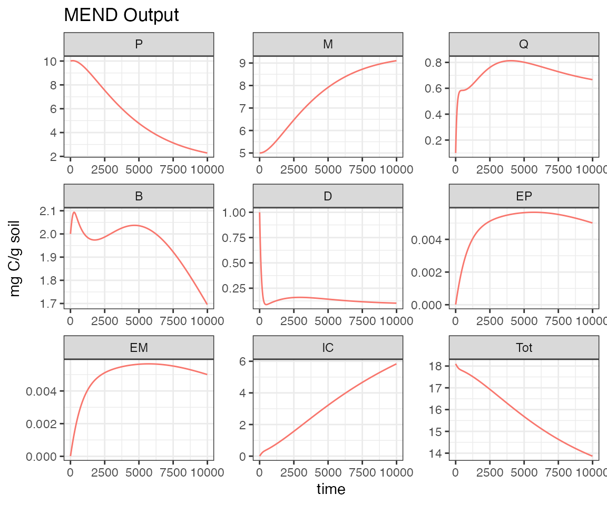
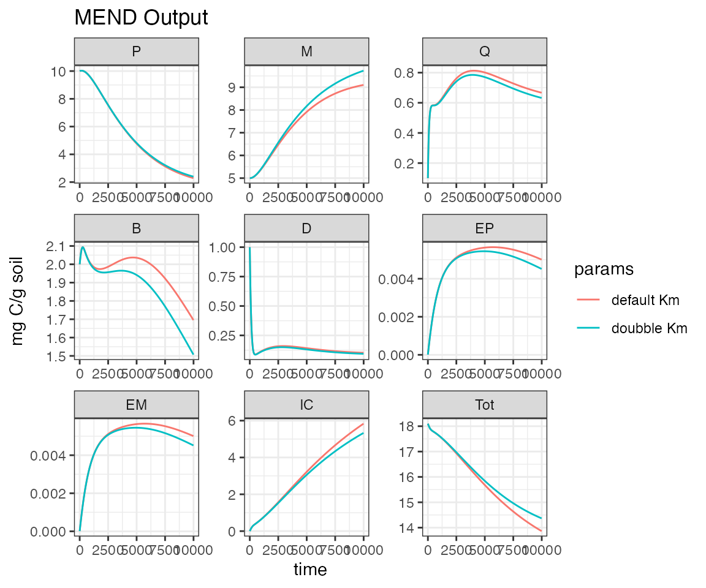
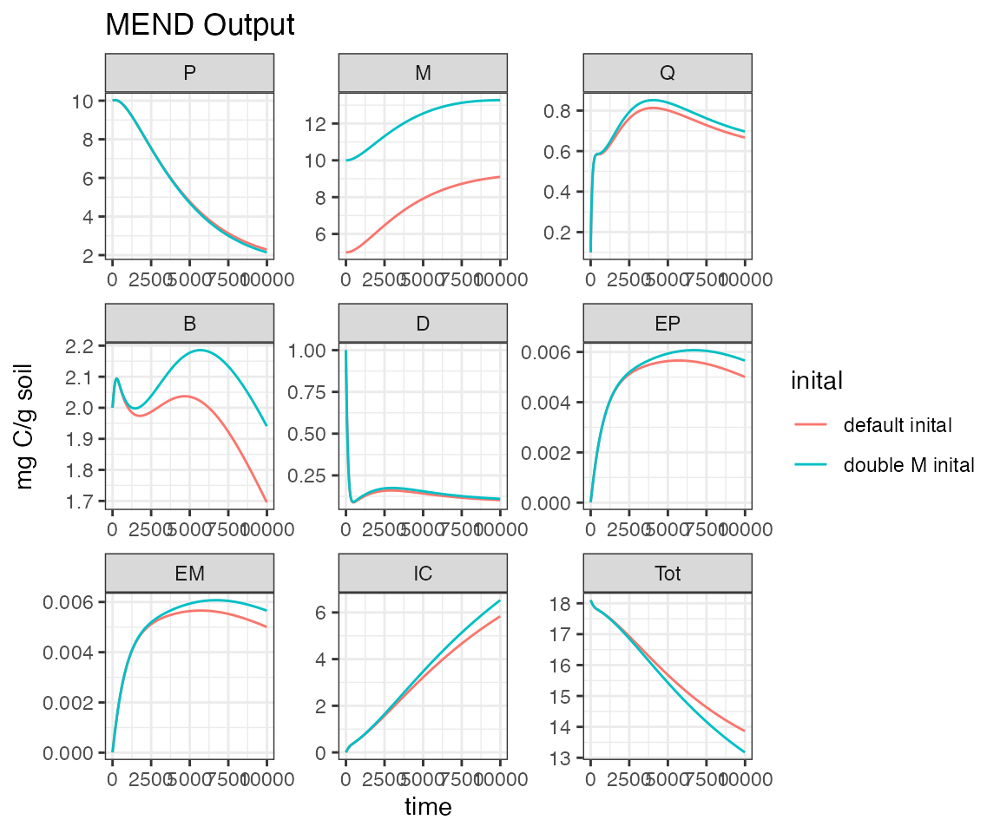

Getting Started
basic_MEMC_runs.RmdThis example will walk you through how to run the MEND model included in the MEMC package as well as how to change parameter values and initial starting conditions. These are the basic skills that will allow you to begin to use the package. For more advanced examples see [KRD to add link to other vignette].
Here we will only be working with one of the pre-configured MEMC models MEND_model, this model is based on the 2013 MEND model originally documented in Wang et. al 2013. The MEND 2013 model Wang et. al 2013 is a system of differential equations that describe soil carbon dynamics. There are 8 different carbon pools represented as the circles that are connected by 12 arrows, which represent the fluxes between carbon pools. All of the MEMC model configurations are based on this eight carbon pool structure, the package default parameter values and initial conditions values are also from the manuscript Wang et. al 2013. For more information about the MEND 2013 model, we encourage users to read Wang et. al 2013.

Conceptual diagram of MEND from Wang et al. 2013
Basic Run
library(MEMC) # MEMC should already be installed, see installation instructions.
library(ggplot2) # package used to visualize results
#> Warning in register(): Can't find generic `scale_type` in package ggplot2 to
#> register S3 method.
library(knitr) # makes nice tables
library(magrittr) # import the %>% pipeline
# set a theme to use in all the plots
theme_set(theme_bw()) The MEMC package has pre-built model configurations including one titled MEND_model which refers to the model published by Wang et. al 2013, run help(MEND_model) for more details and examples on how to solve.
All of the model configurations included in the MEMC package can be used directly with solve_model. Before trying to solve the model let’s take a look at the model configuration. It is a named list that containing the following
The name of the model configuration.
MEND_model$name
#> [1] "MEND"A table (kable) describing the model configuration, which kinetics are used where.
MEND_model$config| Model | POMdecomp |
|---|---|
| MEND | MM |
A vector of the initial state values.
MEND_model$state
#> P M Q B D EP EM IC
#> 10.00000 5.00000 0.10000 2.00000 1.00000 0.00001 0.00001 0.00000
#> Tot
#> 18.10002An environment where the parameters and inital state values are defined, this is made with configure_model.
class(MEND_model$env)
#> [1] "environment"A function defining the carbon pools, the object returned from carbon_pools.
head(MEND_model$carbon_pools_func)
#>
#> 1 function (t, env, state = NULL, params = NULL, flux_function = carbon_fluxes(POMdecomp = "MM"))
#> 2 {
#> 3 assert_that(is.numeric(t))
#> 4 fx <- flux_function
#> 5 assert_that(is.list(flux_function))
#> 6 assert_that(length(fx) == 2)A function defining the carbon fluxes, this is returned by carbon_fluxes and cacn be modified by modify_fluxes_func.
head(MEND_model$carbon_fluxes_func)
#> $flux_table
#> POMdecomp
#> 1 MM
#>
#> $flux_function
#> function(env, state=NULL, params=NULL){
#>
#> # Update model parameter & initial state values if needed.
#> if(!is.null(params)){
#> p <- params$value
#> names(p) <- params$parameter
#> modify_env(env, p)
#>
#> }
#> if(!is.null(state)){
#> modify_env(env, state)
#> }
#> with(as.list(env), {
#>
#> # Set up the original functions.
#> fluxes <- carbon_fluxes_internal(env = env)
#>
#> if(POMdecomp == "MM"){
#> fluxes[["F1"]] = function(){
#> # DOC uptake by microbial biomass.
#> # Michaelis menten kinetics
#> (1/E.c) * (V.d + m.r) * B * D /(K.d + D)
#> }
#> } else if(POMdecomp == "RMM") {
#> fluxes[["F1"]] = function(){
#> # DOC uptake by microbial biomass.
#> # Reverse michaelis menten kinetics
#> (1/E.c) * (V.d + m.r) * B * D /(K.d + B)
#> }
#> } else if(POMdecomp == "ECA"){
#> fluxes[["F1"]] = function(){
#> # DOC uptake by microbial biomass, note that this uses ECA kinetics.
#> (1/E.c) * (V.d + m.r) * B * D /(K.d + B + D)
#> }
#> } else if(POMdecomp == "LM") {
#> message("needs to be implemented")
#> }
#>
#> return(fluxes)
#>
#> })
#> }
#> <environment: 0x7f8eb9634c88>Run the default MEND configuration and plot the results.
# Set up a time vector
t <- seq(from = 1, to = 1e4, by = 10)
# Solve the MEND_model configuration, unless a new parameter table or vector of initial state values are
# specified as arguments the MEND_model configuration will use the default_params and default_inital inputs.
out1 <- solve_model(mod = MEND_model, time = t)Plot results.
ggplot(data = out1) +
geom_line(aes(time, value, color = name)) +
labs(title = "MEND Output",
y = unique(out1$units)) +
facet_wrap("variable", scales = "free") +
theme(legend.position = 'none') 
Use a different parameter value
Here is the parameter table of the default values from Wang et. al 2013.
kable(default_params)| parameter | description | units | value |
|---|---|---|---|
| V.p | maximum specific decomposition rate for P by EP | mgC mgC^-1 h^-1 | 2.5e+00 |
| K.p | half-saturation constant for decomposition of P | mgC / g soil | 5.0e+01 |
| V.m | maximum specific decomposition rate for M by EM | mgC mgC^-1 h^-1 | 1.0e+00 |
| K.m | half-saturation constant for decomposition of M | mg C/g soil | 2.5e+02 |
| V.d | maximum specific uptake rate of D for growth of B | mgC mgC^-1 h^-1 | 5.0e-04 |
| K.d | half-saturation constant of uptake of D for growth of B | mg C/g soil | 2.6e-01 |
| m.r | specific maintenance factor or rate | mgC mgC^-1 h^-1 | 2.8e-04 |
| E.c | carbon use efficiency | NA | 4.7e-01 |
| f.d | fraction of decomposed P allocated to D | NA | 5.0e-01 |
| g.d | fraction of dead B allocated to D | NA | 5.0e-01 |
| p.ep | fraction of mR for production of EP | NA | 1.0e-02 |
| p.em | fraction of mR for production of EM | NA | 1.0e-02 |
| r.ep | turnover rate of EP | mgC mgC^-1 h^-1 | 1.0e-03 |
| r.em | turnover rate of EM | mgC mgC^-1 h^-1 | 1.0e-03 |
| Q.max | maximum DOC sorption capacity | mgC / g soil | 1.7e+00 |
| K.ads | specific adsorption rate | mgC mgC^-1 h^-1 | 6.0e-03 |
| K.des | desorption rate | mgC mgC^-1 h^-1 | 1.0e-03 |
| K.ba | binding affinity | (mgC/soil)^-1 | 6.0e+00 |
| I.p | input rate of P | mgC mgC^-1 h^-1 | 8.0e-05 |
| I.d | input rate of D | mgC mgC^-1 h^-1 | 8.0e-05 |
| fI.d | ratio of ID to IP | NA | 1.0e+00 |
For this example let’s double the half-saturation constant for decomposition of M (K.m) effects the rate of POM update by microbial biomass.
# Extract a the default value for the km parameter
value <- default_params[default_params$parameter == "K.m", "value"]
# Double default value
new_km <- value * 2
names(new_km) <- "K.m"
# Make a new parameter table.
new_param_table <- update_params(new_params = new_km, param_table = default_params)
# Use the new parameter table to solve the model.
out2 <- solve_model(mod = MEND_model, time = t, params = new_param_table)
# Add identifying information to the output tables.
out1$params <- "default Km"
out2$params <- "doubble Km"
rbind(out1, out2) %>%
ggplot(aes(time, value, color = params)) +
geom_line() +
facet_wrap("variable", scales = "free") +
labs(title = "MEND Output",
y = unique(out1$units)) +
facet_wrap("variable", scales = "free")
Use a different inital condition
# save a copy of the default initial conditions to manipulate.
initial_cond <- default_inital
# Double the microbial bio mass
initial_cond[["M"]] <- initial_cond[["M"]] * 2
# Solve MEND with the default parameter values, but using the new initial conditions
out3 <- solve_model(mod = MEND_model, time = t, params = default_params, state = initial_cond)
out1$inital <- "default inital"
out3$inital <- "double M inital"
rbind(out1, out3, fill = TRUE) %>%
ggplot(aes(time, value, color = inital)) +
geom_line() +
facet_wrap("variable", scales = "free") +
labs(title = "MEND Output",
y = unique(out1$units)) +
facet_wrap("variable", scales = "free")
For more advanced examples please check out some of our other vignettes such as [KRD to add]
References
Wang, G., Post, W.M. and Mayes, M.A. (2013), Development of microbial-enzyme-mediated decomposition model parameters through steady-state and dynamic analyses. Ecological Applications, 23: 255-272. https://doi.org/10.1890/12-0681.1